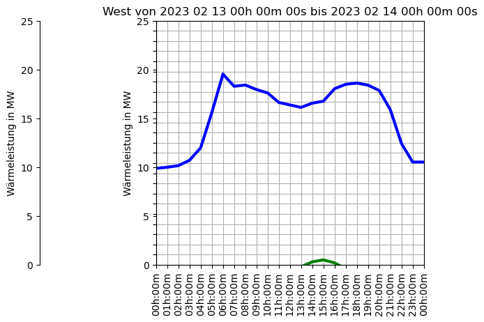
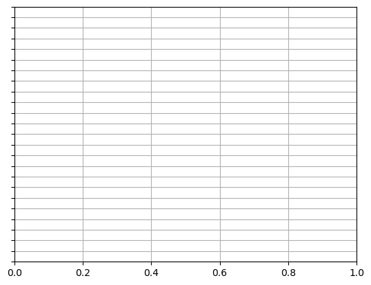

Imports
[22]:
import os
import logging
import pandas as pd
import datetime
import numpy as np
import ipywidgets as widgets
from ipywidgets import interact
import matplotlib
import matplotlib.pyplot as plt
import matplotlib.dates as mdates
import matplotlib.gridspec as gridspec
import matplotlib.ticker as ticker
import matplotlib.colors as mcolors
from matplotlib.pyplot import Polygon
from matplotlib.ticker import FuncFormatter
from matplotlib.dates import DateFormatter, MinuteLocator
import matplotlib.ticker as ticker
try:
from PT3S import dxAndMxHelperFcts
except:
import dxAndMxHelperFcts
try:
from PT3S import Rm
except:
import Rm
[2]:
pt3s_path = os.path.dirname(os.path.abspath(dxAndMxHelperFcts.__file__))
Logging
[3]:
logger = logging.getLogger()
logFileName= r"Example2.log"
loglevel = logging.DEBUG
logging.basicConfig(filename=logFileName
,filemode='w'
,level=loglevel
,format="%(asctime)s ; %(name)-60s ; %(levelname)-7s ; %(message)s")
fileHandler = logging.FileHandler(logFileName)
logger.addHandler(fileHandler)
consoleHandler = logging.StreamHandler()
consoleHandler.setFormatter(logging.Formatter("%(levelname)-7s ; %(message)s"))
consoleHandler.setLevel(logging.INFO)
logger.addHandler(consoleHandler)
Model and Time Curves
[4]:
dbFilename="Wärmenetz-Planungsbeispiel"
[5]:
csvFilename="time_curves"
Read Model and Time Curves
[6]:
file_path=pt3s_path+'/Examples/'+csvFilename+'.csv'
[7]:
def read_multiple_time_curves(file_path):
with open(file_path, 'r', encoding='ISO-8859-1') as f:
lines = f.readlines()
dataframes = []
current_lines = []
curve_name = ''
for line in lines:
if line.strip() == ';' or line.strip() == '':
if current_lines:
df = pd.DataFrame([sub.split(";") for sub in current_lines[2:]]) # Skip the first two lines
df = df.iloc[:, :2] # Only take the first two columns
df.columns = ['Datetime', curve_name] # Rename the columns
dataframes.append(df)
current_lines = []
else:
if 'Zeitkurven' in line:
curve_name = line.split(' ')[1] # Extract the curve name
current_lines.append(line.strip())
if current_lines:
df = pd.DataFrame([sub.split(";") for sub in current_lines[2:]]) # Skip the first two lines
df = df.iloc[:, :2] # Only take the first two columns
df.columns = ['Datetime', curve_name] # Rename the columns
dataframes.append(df)
return dataframes
[8]:
time_curves_dataframes = read_multiple_time_curves(file_path)
[140]:
time_curves_dataframes[1].head()
[140]:
| Datetime | Umwälzmenge;\n | |
|---|---|---|
| 0 | 2023-02-13 00:00:00 | 287.090057 |
| 1 | 2023-02-13 01:00:00 | 290.241272 |
| 2 | 2023-02-13 02:00:00 | 294.834534 |
| 3 | 2023-02-13 03:00:00 | 309.798828 |
| 4 | 2023-02-13 04:00:00 | 347.568024 |
Plotting
Prepare Data
[126]:
datetime_format = '%Y-%m-%d %H:%M:%S,%f'
for df in time_curves_dataframes:
df.iloc[:, 0] = pd.to_datetime(df.iloc[:, 0], format='%Y-%m-%d %H:%M:%S,%f')
df.iloc[:, 1] = df.iloc[:, 1].str.replace(',', '.')
df.iloc[:, 1] = pd.to_numeric(df.iloc[:, 1], errors='coerce')
[ ]:
#Mapping for ax Functions
Define Functions
[141]:
def fyP(ax,offset=0):
ax.spines["left"].set_position(("outward", offset))
ax.set_ylabel('Druck in bar')
ax.set_ylim(0,24)
ax.set_yticks(sorted(np.append(np.linspace(0,24,25),[])))
ax.yaxis.set_ticks_position('left')
ax.yaxis.set_label_position('left')
def fyT(ax,offset=60):
Rm.pltLDSHelperY(ax)
ax.spines["left"].set_position(("outward",offset))
ax.set_ylabel('Temperatur in °C')
ax.set_ylim(0,144)
ax.set_yticks(sorted(np.append(np.linspace(0,144,25),[])))
ax.yaxis.set_ticks_position('left')
ax.yaxis.set_label_position('left')
def fyQ(ax,offset=120):
Rm.pltLDSHelperY(ax)
ax.spines["left"].set_position(("outward",offset))
ax.set_ylabel('Durchfluss in m3/h')
ax.set_ylim(0,3840)
ax.set_yticks(sorted(np.append(np.linspace(0,3840,25),[])))
ax.yaxis.set_ticks_position('left')
ax.yaxis.set_label_position('left')
def fyW(ax,offset=180):
Rm.pltLDSHelperY(ax)
ax.spines["left"].set_position(("outward",offset))
ax.set_ylabel('Wärmeleistung in MW')
ax.set_ylim(0,25)
ax.set_yticks(sorted(np.append(np.linspace(0,25,6),[])))
ax.yaxis.set_ticks_position('left')
ax.yaxis.set_label_position('left')
def fyNY(ax,offset=240):
Rm.pltLDSHelperY(ax)
ax.spines["left"].set_position(("outward",offset))
ax.set_ylabel('Drehzahl in Y')
ax.set_ylim(0, 100)
ax.set_yticks(sorted(np.append(np.linspace(0,100,25),[])))
ax.yaxis.set_ticks_position('left')
ax.yaxis.set_label_position('left')
def fyNrpm(ax,offset=240):
Rm.pltLDSHelperY(ax)
ax.spines["left"].set_position(("outward",offset))
ax.set_ylabel('Drehzahl in rpm')
ax.set_ylim(0, 2400)
ax.set_yticks(sorted(np.append(np.linspace(0,2400,25),[])))
ax.yaxis.set_ticks_position('left')
ax.yaxis.set_label_position('left')
def fyUmwMe(ax,offset=300):
Rm.pltLDSHelperY(ax)
ax.spines["left"].set_position(("outward",offset))
ax.set_ylabel('Umwälzmenge in ###')
ax.set_ylim(250, 600)
ax.set_yticks(sorted(np.append(np.linspace(250, 600,25),[])))
ax.yaxis.set_ticks_position('left')
ax.yaxis.set_label_position('left')
[171]:
def plotAll(dfs
,should_plot
,Startzeit=time_curves_dataframes[0].iloc[0, 0]
,Endzeit=time_curves_dataframes[0].iloc[24, 0]):
# Create a new figure and axis
fig, ax0 = plt.subplots()
# Set y-axis ticks and labels
ax0.set_yticks(np.linspace(0, 24, 25))
ax0.yaxis.set_ticklabels([])
ax0.grid()
colors = ['blue', 'red', 'green', 'orange', 'purple']
for i, df in enumerate(dfs):
if should_plot[i]:
ax_i = ax0.twinx()
fyW(ax_i, i*60)#Mapping needed
ax_i.plot(dfs[i].iloc[:, 0], dfs[i].iloc[:, 1], color=colors[i % len(colors)], lw=plt.rcParams['lines.linewidth']*2, ls='solid')
#if Wärmeleistung:
# ax1 = ax0.twinx()
# fyW(ax1, 0)
# ax1.plot(dfs[0].iloc[:, 0], dfs[0].iloc[:, 1], color='blue', lw=plt.rcParams['lines.linewidth']*2, ls='solid')
#if Temperatur:#Not really a Temp
# ax2 = ax0.twinx()
# fyUmwMe(ax2, 60)
# ax2.plot(dfs[1].iloc[:, 0], dfs[1].iloc[:, 1], color='red', lw=plt.rcParams['lines.linewidth']*2, ls='solid')
ax0.set_xlim(Startzeit, Endzeit)
Rm.pltHelperX(ax0, dateFormat='%Hh:%Mm', byminute=[0, 60], yPos=0)
# Set the title of the plot
Name = f"Prozessdaten West {df.iloc[:, 0].min().strftime('%Y %m %d')}"
plotTitle = f"West von {Startzeit.strftime('%Y %m %d %Hh %Mm %Ss')} bis {Endzeit.strftime('%Y %m %d %Hh %Mm %Ss')}"
ax0.set_title(plotTitle)
# Adjust the layout
plt.subplots_adjust(left=0.3, bottom=0.15)
# Show the plot
plt.show()
[172]:
plotAll(time_curves_dataframes, [True, False, True])

[178]:
import ipywidgets as widgets
from IPython.display import display
import datetime
# Create TimePicker widgets for selecting specific times
Zeitpunkt = widgets.TimePicker(value=datetime.time(8, 0), description='Zeitpunkt:')
Startzeit = widgets.TimePicker(value=datetime.time(0, 1), min=datetime.time(0, 1), description='Startzeit:')
Endzeit = widgets.TimePicker(value=datetime.time(0, 0), description='Endzeit:')
# Create a dictionary to hold the checkboxes for measurement options
checkboxes = {}
# Dynamically create checkboxes based on the second column names of the dataframes
for df in time_curves_dataframes:
column_name = df.columns[1]
checkboxes[column_name] = widgets.Checkbox(value=True, description=column_name)
# Function to update the plot based on the widgets' values
def update_plot(_=None):
# Convert widget times to datetime.datetime objects
start_datetime = datetime.datetime.combine(datetime.date.today(), Startzeit.value)
end_datetime = datetime.datetime.combine(datetime.date.today(), Endzeit.value)
# Prepare a list of selected measurements based on the checkboxes
selected_measurements = [key for key, checkbox in checkboxes.items() if checkbox.value]
# Call the plotAll function with the selected parameters
plotAll(time_curves_dataframes, start_datetime, end_datetime, selected_measurements)
# Observe changes in the widgets and update the plot accordingly
Startzeit.observe(update_plot, 'value')
Endzeit.observe(update_plot, 'value')
for checkbox in checkboxes.values():
checkbox.observe(update_plot, 'value')
# Display the widgets
display(Zeitpunkt, Startzeit, Endzeit, *checkboxes.values())
# Initial plot
update_plot()
---------------------------------------------------------------------------
TypeError Traceback (most recent call last)
Cell In[178], line 40
37 display(Zeitpunkt, Startzeit, Endzeit, *checkboxes.values())
39 # Initial plot
---> 40 update_plot()
Cell In[178], line 28, in update_plot(_)
25 selected_measurements = [key for key, checkbox in checkboxes.items() if checkbox.value]
27 # Call the plotAll function with the selected parameters
---> 28 plotAll(time_curves_dataframes, start_datetime, end_datetime, selected_measurements)
Cell In[171], line 17, in plotAll(dfs, should_plot, Startzeit, Endzeit)
14 colors = ['blue', 'red', 'green', 'orange', 'purple']
16 for i, df in enumerate(dfs):
---> 17 if should_plot[i]:
18 ax_i = ax0.twinx()
19 fyW(ax_i, i*60)
TypeError: 'datetime.datetime' object is not subscriptable

[177]:
import ipywidgets as widgets
from IPython.display import display
from IPython.display import interactive
import datetime
import matplotlib.pyplot as plt
import numpy as np
# Assume 'time_curves_dataframes' is a list of dataframes available in your context
# Assume 'plotAll' function is defined as per the previous discussion
# Create TimePicker widgets for selecting specific times
Startzeit_widget = widgets.TimePicker(value=datetime.time(0, 1), description='Startzeit:')
Endzeit_widget = widgets.TimePicker(value=datetime.time(23, 59), description='Endzeit:')
# Create a dictionary to hold the checkboxes for measurement options
checkboxes = {}
for df in time_curves_dataframes:
column_name = df.columns[1]
checkboxes[column_name] = widgets.Checkbox(value=True, description=column_name)
# Function to convert TimePicker values to datetime objects
def get_datetime(time_picker):
return datetime.datetime.combine(datetime.date.today(), time_picker.value)
# Function to collect the states of the checkboxes
def get_should_plot():
return [checkbox.value for checkbox in checkboxes.values()]
# Use the interactive function to link widgets to the plotAll function
interactive_plot = interactive(plotAll,
dfs=widgets.fixed(time_curves_dataframes),
should_plot=widgets.fixed(get_should_plot()),
Startzeit=widgets.fixed(get_datetime(Startzeit_widget)),
Endzeit=widgets.fixed(get_datetime(Endzeit_widget)))
# Display the widgets and the interactive plot
display(Startzeit_widget, Endzeit_widget, *checkboxes.values())
display(interactive_plot)
---------------------------------------------------------------------------
ImportError Traceback (most recent call last)
Cell In[177], line 3
1 import ipywidgets as widgets
2 from IPython.display import display
----> 3 from IPython.display import interactive
4 import datetime
5 import matplotlib.pyplot as plt
ImportError: cannot import name 'interactive' from 'IPython.display' (C:\Users\jablonski\AppData\Local\anaconda3\Lib\site-packages\IPython\display.py)